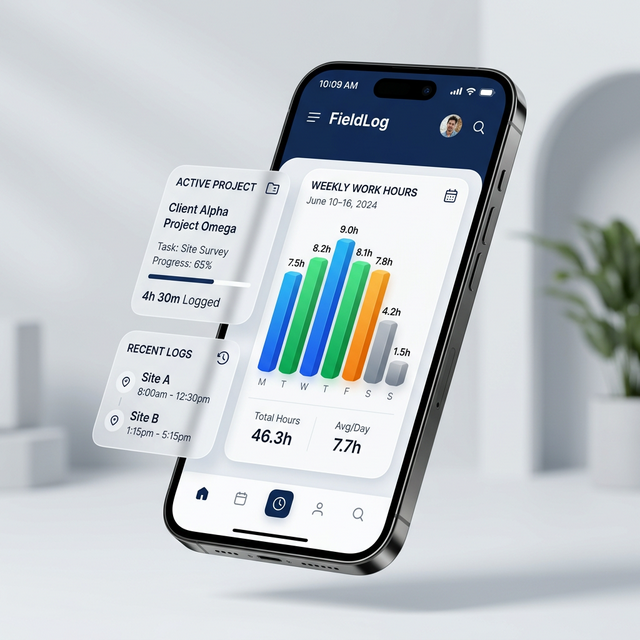

FieldLog
Contact Support
The ultimate tool for field teams.
Track your hours, sync with Google Sheets, and stay productive anywhere — with or without internet.
Experience the Future
Built for the Real World

Reliable Offline
Never lose a minute. Our PWA architecture ensures all your logs are saved locally first and synced as soon as you're back online.

Seamless Sync
Instant integration with Google Sheets. Your managers get real-time updates as soon as you hit save.
Smart Tracking
Log hours against complex project codes, project sites, and labor categories with just a few taps.
Ready to streamline your workflow?
Join hundreds of field professionals who have simplified their weekly reporting.
Get Started Now